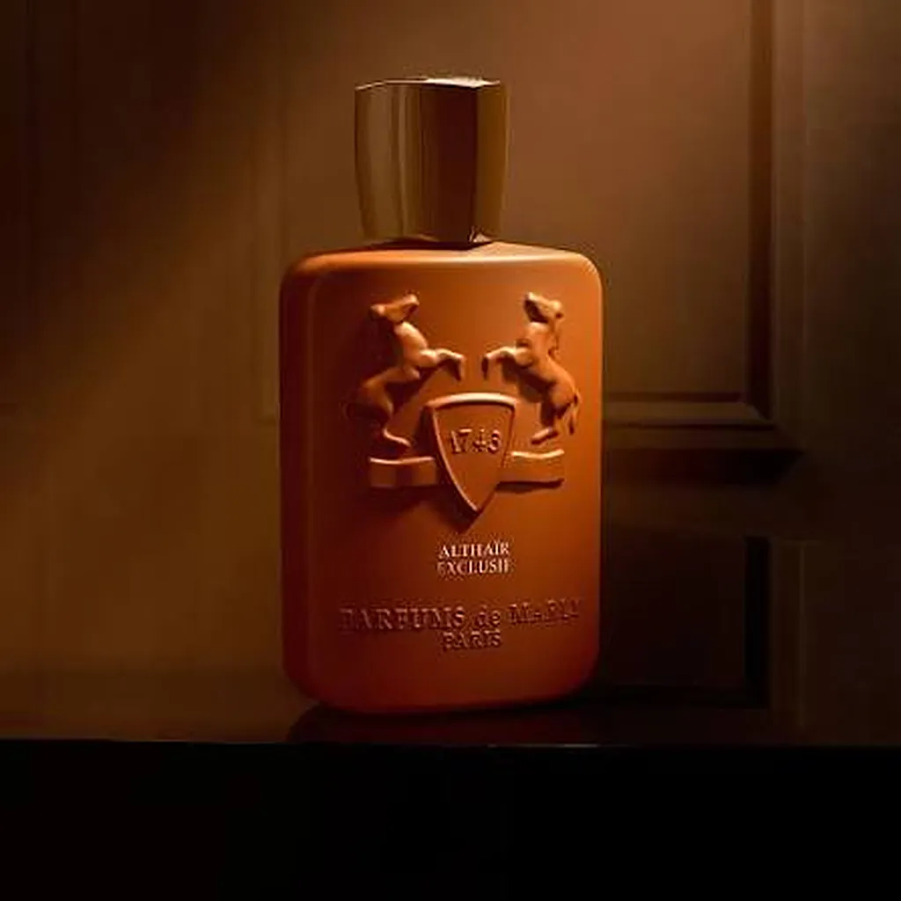
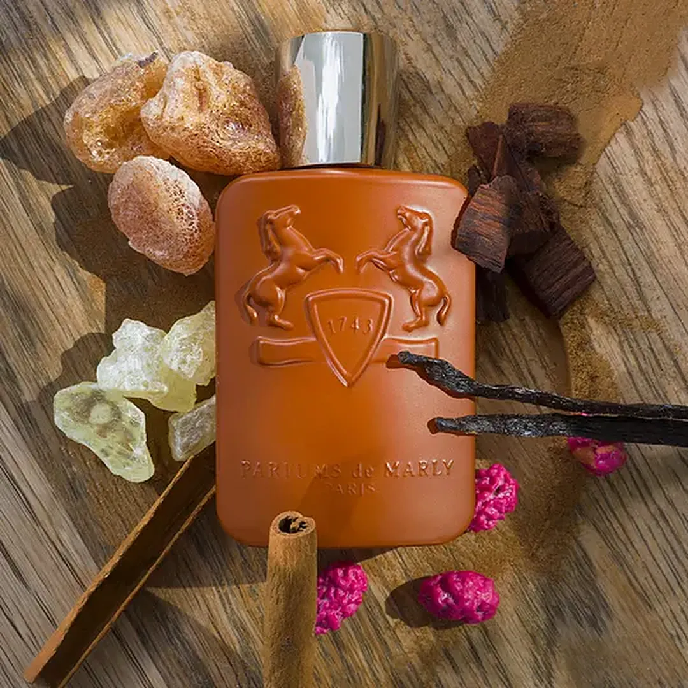
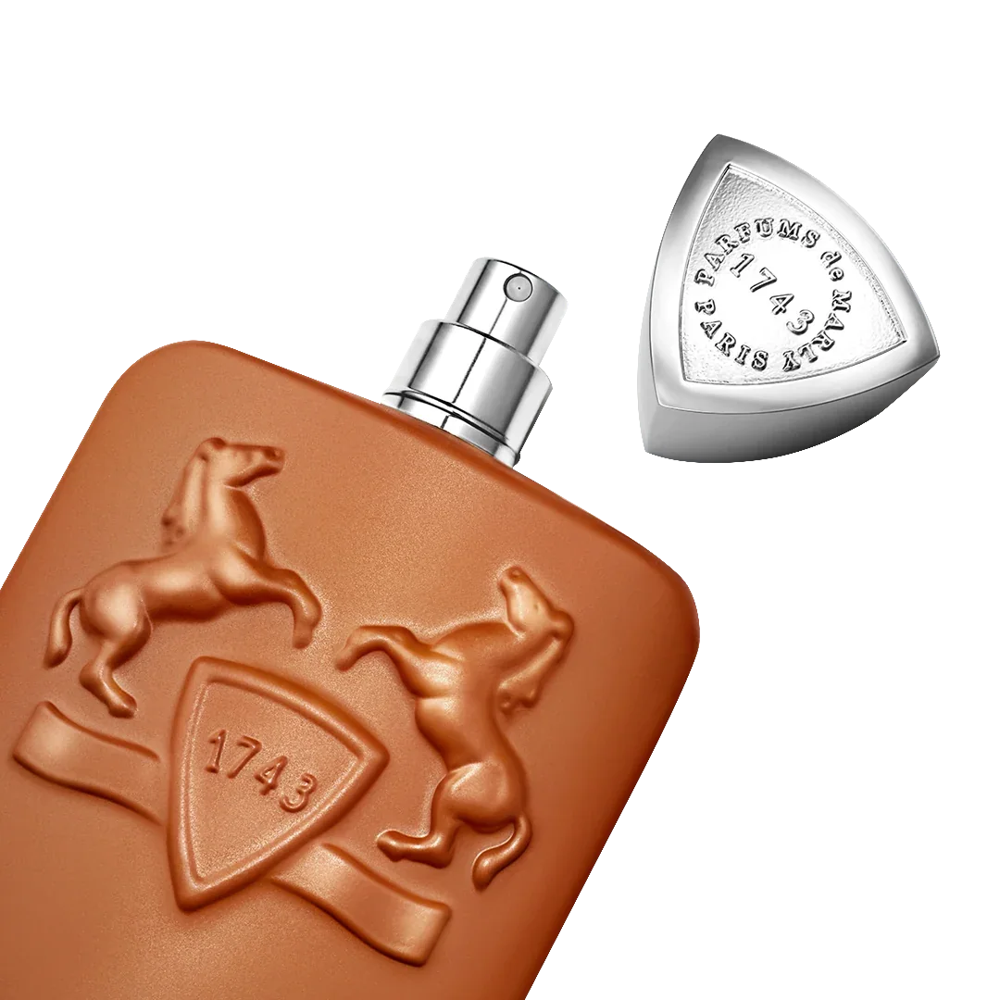

I Notes de tête
L'étincelle
- Cannelle
- Cardamome
- Bergamote
- Fleur d'oranger
Les épices s'embrasent comme un astre qui se lève : vives, dorées, presque solaires.

Parfums de Marly · Eau de Parfum
L'éclat ambré d'une étoile qui ne dort jamais.
01 L'étoile
Altaïr est l'astre le plus brillant de la constellation de l'Aigle. Elle tourne sur elle-même si vite qu'elle s'en trouve aplatie, comme une goutte d'or étirée par la nuit d'été.
Le parfum en capture l'éclat : une chaleur épicée qui s'allume, une vanille qui irradie, un sillage boisé qui persiste longtemps après votre passage.
02 Les notes
Comme une étoile vue à travers l'atmosphère, le parfum change de couleur à mesure qu'il se révèle.

I Notes de tête
Les épices s'embrasent comme un astre qui se lève : vives, dorées, presque solaires.
II Notes de cœur
Une vanille crémeuse et résineuse, qui diffuse une chaleur de braise sous la peau.
III Notes de fond
Un fond gourmand, boisé, ambré, qui s'attarde jusqu'à l'aube.
Pyramide indicative, interprétée pour ce concept.
03 Le flacon

Une laque cuivrée, mate et veloutée, qui absorbe la lumière au lieu de la renvoyer.
Deux chevaux cabrés, frappés dans la masse, qui ne se révèlent qu'à la lumière rasante.
Triangulaire, en métal poli, gravé à l'intérieur. Il se détache comme une pièce de joaillerie.
04 Sillage
« Il entre dans la pièce une seconde avant vous. »
« Une chaleur qui se porte comme du cachemire. »
« La vanille, dans sa version nocturne. »
« Ce qui reste quand la lumière s'éteint. »
05 L'invitation
Une eau de parfum ambrée, épicée et vanillée, pour les nuits qui commencent tard.